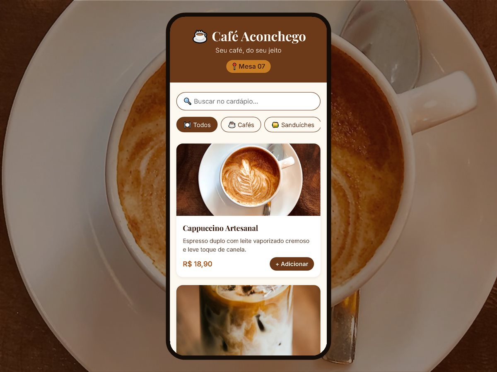

Café Aconchego (demonstração)
Cardápio aberto pelo QR Code da mesa, com busca, categorias e pedido opcional pelo WhatsApp.
Testar o cardápio → Harada Tecnologias
Harada Tecnologias
Soluções digitais para pequenos negócios: simples de usar, rápidas no celular.
Seu restaurante, lanchonete ou açaiteria com um cardápio moderno, aberto no celular do cliente por QR Code. Mudou um prato ou um preço? É só pedir que atualizamos em minutos, sem reimprimir nada.

Cardápio aberto pelo QR Code da mesa, com busca, categorias e pedido opcional pelo WhatsApp.
Testar o cardápio →Projetos em desenvolvimento na Harada Tecnologias.
Monitoramento diário de backups: verifica todos os dias se as cópias de segurança foram concluídas com sucesso.